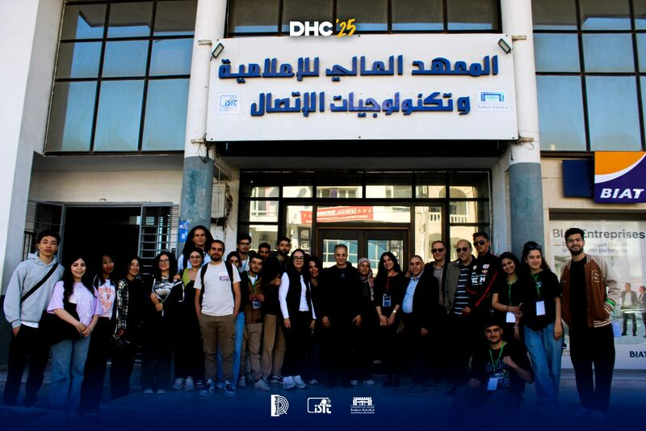

Accréditation nationale
Diplômes reconnus par l'État
Tous nos programmes sont accrédités par le Ministère de l'Enseignement Supérieur tunisien et ouverts à l'international.

L'ISITCOM propose des formations de haut niveau en informatique, télécommunications, IoT et multimédia. Un campus moderne, des enseignants experts et une vie associative riche vous attendent à Hammam Sousse.
Tous nos programmes sont accrédités par le Ministère de l'Enseignement Supérieur tunisien et ouverts à l'international.

Des conventions avec les entreprises leaders du secteur numérique pour des stages, PFE et opportunités d'emploi.
Des cursus adaptés à chaque niveau, de la licence au doctorat.
Labs dédiés à l'IoT, la cybersécurité, les réseaux 5G et le développement multimédia pour une formation aux outils du métier.
Quatre clubs étudiants couvrant la robotique, l'IA, le développement web et les télécommunications. Rejoignez une communauté active.
Cours, examens corrigés, rapports PFE et guides académiques disponibles pour tous les étudiants via l'espace en ligne.
Hackathons, journées portes ouvertes, conférences d'experts et compétitions tout au long de l'année universitaire.
Enrichissez votre parcours universitaire en rejoignant l'un de nos clubs.
Restez informé des activités académiques et culturelles du campus.